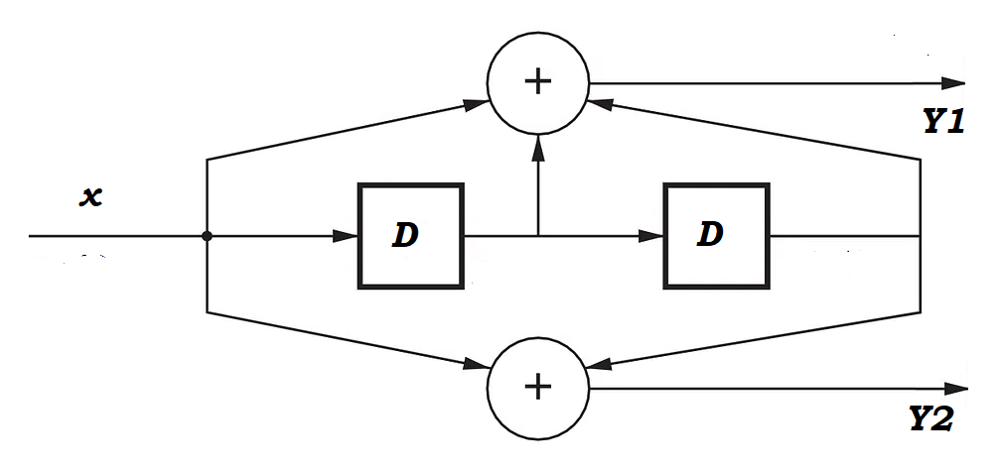
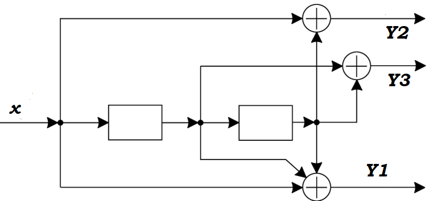

Кодер та Бітові Потоки
Канал із Завадами (Клікніть на біт для зміни)
Трелліс-Діаграма
Пояснення
Цей симулятор демонструє роботу згорткового кодера зі швидкістю кодування \(1/2\).
- Схема Кодера:
Нижче представлена схема обраного кодера. Вхідний біт позначається як \(x[n]\). Регістри затримки зберігають попередні вхідні біти. Операція XOR (виключне АБО) комбінує біти для отримання вихідного потоку \(Y_2\).
- Регістр (\(R_i[n-j]\)): Зберігає попередні вхідні біти. Стан кодера визначається вмістом всіх регістрів.
- XOR: Виконує операцію виключного АБО.
- Вхідний біт (\(x[n]\)): Поточний біт, що надходить у кодер.
- Правила формування вихідних бітів:
- Рух Бітів:
- Вхідний та кодовані потоки: відображаються справа наліво. Найновіший біт з'являється з правого краю, а попередні біти зміщуються ліворуч.
- Отримані потоки (Канал із Завадами): відображаються зліва направо. Найновіший біт з'являється з лівого краю, а попередні біти зміщуються праворуч.
- Канал із Завадами: Імітує випадкові помилки під час передачі бітів через канал з заданою ймовірністю помилки. Біти, в яких сталася помилка, виділені червоним. Додатково, ви можете клікнути на будь-який отриманий біт, щоб інвертувати його значення та спостерігати, як це впливає на процес декодування.
- Трелліс-Діаграма:
- Показує можливі переходи між станами кодера. Стан кодера визначається вмістом його регістрів.
- Перехід, що відповідає вхідному біту 0, позначений суцільною лінією.
- Перехід, що відповідає вхідному біту 1, позначений пунктирною лінією.
- Підписи на ребрах: Формат підпису: \(x[n] / Y_1Y_2\). Наприклад, \(0/00\) означає, що на вхід подано \(0\), а на виході отримано \(00\).
- Декодований шлях (зелений): Показує найбільш ймовірний шлях декодування за алгоритмом Вітербі на основі отриманих бітів. "D" вказує кумулятивну відстань Хеммінга до цього стану.
- Шлях, де декодер не впорався (червоний): Це ділянки істинного кодованого шляху, які не співпали з декодованим (зеленим) шляхом. Це означає, що алгоритм Вітербі припустився помилки декодування на цій ділянці.
Алгоритм Вітербі: Розрахунок Кумулятивної Відстані та Побудова Шляху
Алгоритм Вітербі використовується для знаходження найбільш ймовірного шляху (послідовності станів) через трелліс-діаграму, що відповідає отриманій послідовності символів, при наявності шуму в каналі. Він мінімізує кумулятивну відстань Хеммінга.
- Відстань Хеммінга (\(d_H\)): Це кількість позицій, в яких два бінарні вектори різної довжини відрізняються. Для кожної гілки на трелліс-діаграмі (що відповідає парі переданих бітів, наприклад, \(Y_1Y_2\)), розраховується відстань Хеммінга між очікуваними вихідними бітами кодера та фактично отриманими бітами з каналу. $$d_H(V_1, V_2) = \sum_{i=1}^{L} (V_{1,i} \oplus V_{2,i})$$ Де \(V_1\), \(V_2\) - бінарні вектори, \(L\) - їх довжина, \(\oplus\) - XOR. У нашому випадку, \(L=2\) (для пари \(Y_1Y_2\)).
- Кумулятивна Відстань (\(D\)): Для кожного стану на кожному часовому кроці (колонці трелліс-діаграми) зберігається мінімальна кумулятивна відстань Хеммінга від початкового стану до цього поточного стану. Коли новий біт надходить, алгоритм розглядає всі можливі переходи до нових станів: $$D_{\text{новий_стан}} = D_{\text{попередній_стан}} + d_{H(\text{вихід_гілки}, \text{ отриманий_символ})}$$ Якщо кілька гілок ведуть до одного стану, вибирається та, що дає мінімальну кумулятивну відстань.
- Побудова Шляху (Backtracking): Після обробки всіх вхідних бітів, алгоритм знаходить стан з мінімальною кумулятивною відстанню в останній колонці трелліс-діаграми. Потім він рухається назад (від останньої колонки до першої), використовуючи збережені "вказівники" (\(paths\)) на те, яка гілка була обрана як оптимальна для досягнення кожного стану. Це дозволяє реконструювати найбільш ймовірну послідовність вхідних бітів, яка була відправлена кодером. Виділений зеленим кольором шлях і є результатом цього зворотного проходу.
Згорткові Коди
Згорткові коди широко використовуються в сучасних комунікаційних системах, таких як стільниковий зв'язок, супутниковий зв'язок, бездротові мережі (Wi-Fi), та цифрове телебачення. Їх ефективність у виправленні помилок робить їх ключовим елементом надійних систем передачі даних.
У цьому симуляторі реалізовано два згорткові кодери зі швидкістю кодування \(R = 1/2\):
- Кодер 1 (K=2): має 1 регістр затримки і 2 можливих стани.
- Кодер 2 (K=3): має 2 регістри затримки і 4 можливих стани.
Нижче наведено приклади інших, більш складних згорткових кодів.
Основні Характеристики Згорткових Кодів:
- Швидкість кодування (\(R = k/n\)): Відношення кількості вхідних бітів до кількості вихідних бітів за один такт. Що менша швидкість (наприклад, \(1/3\) замість \(1/2\)), то більше надмірності додається і потенційно краща корекція помилок, але за рахунок пропускної здатності.
- Довжина обмеження (\(K\)): Кількість регістрів затримки плюс один, що визначає "пам'ять" кодера. Що більша \(K\), то більше станів у кодера, і тим краща його корекція помилок, але й складнішим стає декодування (трелліс-діаграма стає ширшою).
- Утворюючі поліноми (Generating Polynomials): Ці поліноми визначають, як вхідні та регістрові біти комбінуються за допомогою операцій XOR для формування вихідних бітів. Вони зазвичай представлені у восьмеричному форматі.
Приклади найпростіших кодів:
1. Згортковий Кодер з Довжиною Обмеження \(K=2\) (1 регістр затримки, 2 стани)
Швидкість: \(R = 1/2\)
Утворюючі поліноми: \(G_1 = (1)_2 = (1)_8\), \(G_2 = (11)_2 = (3)_8\)
Формули для цього кодера:
$$Y_1[n] = x[n]$$ $$Y_2[n] = x[n] \oplus R[n-1]$$
2. Згортковий Кодер з Довжиною Обмеження \(K=3\) (2 регістри затримки, 4 стани)
Цей кодер має \(2^{K-1} = 2^{3-1} = 2^2 = 4\) стани. Стан кодера визначається вмістом двох регістрів затримки: \(R_1[n-1]R_2[n-2]\).
Швидкість: \(R = 1/2\)
Утворюючі поліноми: \(G_1 = (111)_2 = (7)_8\), \(G_2 = (101)_2 = (5)_8\)
Ці поліноми визначають зв'язки таким чином:
$$Y_1[n] = x[n] \oplus R_1[n-1] \oplus R_2[n-2]$$ $$Y_2[n] = x[n] \oplus R_2[n-2]$$Де \(R_1[n-1]\) і \(R_2[n-2]\) - вміст першого та другого регістрів затримки відповідно.

3. Приклад Згорткового Кодера зі Швидкістю \(R = 1/3\)
Кодери з нижчою швидкістю кодування додають більше надмірності, що дозволяє виправляти більше помилок, але зменшує корисну пропускну здатність каналу. Цей тип кодера не реалізований у поточному симуляторі, але є прикладом більш складних конфігурацій.
Швидкість: \(R = 1/3\)
Довжина обмеження: Залежить від конкретної реалізації, наприклад, \(K=3\).
Утворюючі поліноми (приклад для \(K=3\), \(R=1/3\)): \(G_1 = (111)_2 = (7)_8\), \(G_2 = (101)_2 = (5)_8\), \(G_3 = (011)_2 = (3)_8\)
Відповідні формули виходів:
$$Y_1[n] = x[n] \oplus R_1[n-1] \oplus R_2[n-2]$$ $$Y_2[n] = x[n] \oplus R_2[n-2]$$ $$Y_3[n] = R_1[n-1] \oplus R_2[n-2]$$
Переваги та Застосування:
- Покращена корекція помилок: Збільшення довжини обмеження або зменшення швидкості кодування покращує здатність кодера виправляти помилки, оскільки кожен вихідний біт залежить від більшої кількості попередніх вхідних бітів.
- Декодування Вітербі: Хоча складність декодування за алгоритмом Вітербі зростає експоненційно зі збільшенням довжини обмеження (кількості станів), сучасні обчислювальні потужності дозволяють ефективно декодувати коди з \(K\) до 7-9.
- Турбо-коди та LDPC-коди: Це більш сучасні та складні ітераційні коди, які можуть наближатися до теоретичної межі Шеннона. Вони часто використовують згорткові компоненти або принципи, але мають значно складнішу структуру та алгоритми декодування.
Вибір Генеруючих Поліномів
Вибір генеруючих поліномів для згорткового кодера є критично важливим, оскільки він безпосередньо впливає на корегуючу здатність коду. Генеруючі поліноми (або їх коефіцієнти) визначають з'єднання між елементами регістру зсуву та суматорами по модулю 2, які формують вихідні біти кодера.
- Максимізація вільної відстані (free distance, \(d_{free}\) або \(d_f\)): Головна мета при виборі генеруючих поліномів — це досягнення максимально можливої вільної відстані для даної швидкості кодування (\(k/n\)) та довжини обмеження (\(K\)). Вільна відстань є мінімальною відстанню Хеммінга між будь-якими двома можливими кодовими послідовностями, що виробляються кодером. Чим більша вільна відстань, тим краща корегуюча здатність коду.
- Методи пошуку: Часто оптимальні генеруючі поліноми знаходять за допомогою вичерпних (exhaustive) методів пошуку або обмежених алгоритмів пошуку, які перевіряють різні комбінації з'єднань з метою виявлення тих, що дають найбільшу вільну відстань.
- Вплив на BER: Продуктивність згорткового коду (наприклад, показник бітових помилок - BER) значною мірою залежить від вибору генеруючих поліномів для конкретної довжини обмеження.
- Кількість поліномів: Для кодера зі швидкістю \(k/n\) (де \(k\) - кількість вхідних бітів, \(n\) - кількість вихідних бітів) існує \(n\) генеруючих поліномів, по одному для кожного вихідного біта.
Пояснення нотації Генеруючих Поліномів
Генеруючі поліноми можуть бути представлені у бінарному, восьмеричному або поліноміальному вигляді.
- G_1 = (111)_2: Це бінарне представлення генеруючого полінома для першого вихідного біта (G1). Кожна цифра '1' у цьому бінарному рядку вказує на наявність з'єднання (відводу) від відповідного елемента регістру зсуву (або поточного вхідного біта) до суматора по модулю 2, який генерує цей вихідний біт. Найлівіший біт '1' зазвичай відповідає поточному вхідному біту, а наступні біти '1' відповідають відводам від попередніх станів пам'яті (елементів зсувного регістру). У поліноміальній формі, це часто відповідає \(1 + D + D^2\), де \(D\) є оператором затримки.
- (7)_8: Це восьмеричне представлення того ж самого генеруючого полінома. Восьмеричне число є компактним способом запису бінарних чисел. Число `7` у восьмеричній системі числення еквівалентне `111` у двійковій системі числення. Таким чином, \(G_1 = (111)_2\) є тим самим, що й \(G_1 = (7)_8\).
Оцінка Корегуючої Здатності Коду
Корегуючу здатність згорткового коду можна оцінити кількома способами:
- Вільна відстань (Free Distance, \(d_{free}\)): Це найважливіша метрика. Вона представляє мінімальну відстань Хеммінга між будь-якими двома кодовими словами, що розходяться в якийсь момент часу. Чим більша вільна відстань, тим більше помилок може виправити код. Збільшення довжини обмеження (\(K\)) кодера, як правило, збільшує вільну відстань і, відповідно, покращує корегуючу здатність.
- Алгоритм Вітербі (Viterbi Algorithm): Цей алгоритм є стандартним методом декодування згорткових кодів. Він знаходить найбільш ймовірний шлях (послідовність станів) через решітчасту діаграму (trellis diagram), що відповідає отриманій послідовності символів, навіть за наявності шуму в каналі. Корегуюча здатність коду при декодуванні Вітербі безпосередньо пов'язана з його вільною відстанню: чим більша вільна відстань, тим краще алгоритм Вітербі може розрізняти правильні та помилкові шляхи.
- Показник бітових помилок (Bit Error Rate, BER): Корегуючу здатність також оцінюють шляхом вимірювання BER за різних співвідношень сигнал/шум (SNR). Нижчий BER при певному SNR свідчить про кращу корегуючу здатність коду.
- Активна пакетна відстань (Active Burst Distance): Деякі дослідження використовують цю метрику для оцінки здатності згорткових кодів виправляти помилки або стерті символи, що виникають пакетами (серіями).